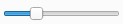

L'interface graphique
Les outils de la navigation
Les outils suivants sont liés à la liste détail :
La taille des colonnes de la liste est calculée automatiquement ou
réglée par l'utilisateur.

Modifie la tailles des icônes affichées dans la liste.
- ou
Affichage en liste ou en icône de la liste.